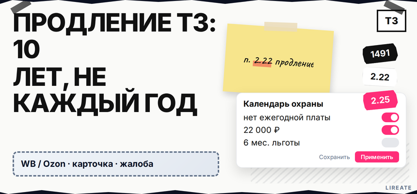
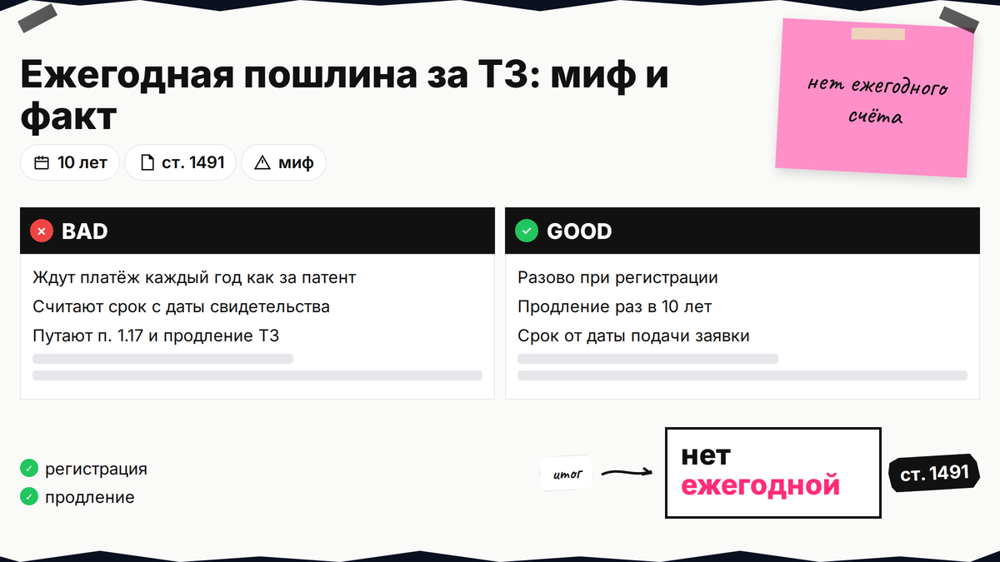
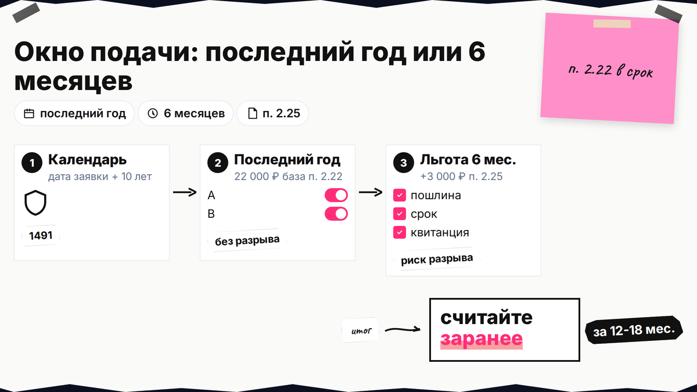
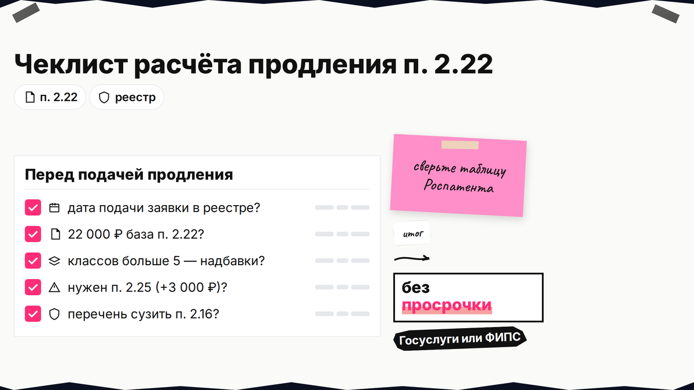

В чатах предпринимателей часто путают товарный знак с патентом и ждут "ежегодный платёж за поддержание". На практике госпошлину на товарный знак каждый год не платят: деньги уходят при регистрации (несколько этапов) и потом раз в 10 лет при продлении. Ниже вы проверите миф, посчитаете п. 2.22 и при необходимости п. 2.25 по актуальной таблице Роспатента, выберете окно подачи и не потеряете имя из-за пропущенного срока.

TL;DR / Быстрый инсайт: Ежегодной госпошлины за поддержание товарного знака нет (ст. 1491 ГК РФ). Охрана длится 10 лет с даты подачи заявки, не с даты свидетельства. Продление - заявление правообладателя + оплата п. 2.22 (22 000 ₽ база за цикл) в последний год действия или в льготных 6 месяцах после истечения с доплатой п. 2.25 (3 000 ₽). Разовые платежи при первой регистрации (пп. 2.1, 2.4, 2.11) разобраны в гайде по самостоятельной регистрации.
Материал для правообладателя ТЗ: ИП, ООО, маркетплейс, франшиза. Пошлины сверены с таблицей Роспатента (обновление 03.10.2025, надбавка 500 ₽ за позицию перечня свыше 10 в классе с 04.10.2025) и приложением № 1 к ПП РФ № 941 на 10.11.2026. Не индивидуальная юридическая консультация.

Страх "ежегодного счёта" тянется из патентов: там поддержание платное по периодам. У товарного знака вы платите при регистрации, затем раз в 10 лет за продление.
| Вопрос | Ответ | Опора |
|---|---|---|
| Нужна ли ежегодная госпошлина за ТЗ? | Нет | Оплата при регистрации + при продлении раз в 10 лет |
| От чего считаются 10 лет? | От даты подачи заявки | ст. 1491 п. 1 ГК РФ |
| А патент на изобретение? | Платные периоды поддержания (например п. 1.17) | Иное Положение о пошлинах |
Делайте: отделяйте в бюджете "регистрацию", "продление" и "патент". Не делайте: закладывать в план фиктивные 2 850 ₽ в год - такого обязательного платежа за ТЗ нет.

По п. 1 ст. 1491 право на знак длится 10 лет со дня подачи заявки, а не со дня свидетельства.
Продление возможно неограниченно (п. 2 ст. 1491). Делайте: хранить выписку с датой заявки. Не делайте: считать срок от даты свидетельства.

При первой регистрации платят цепочку пп. 2.1, 2.4, 2.11 — за один класс это 35 000 ₽ (4 000 + 13 000 + 18 000) при любой подаче; свидетельство выдаётся в электронном виде, бумажный экземпляр оплачивают отдельно по п. 2.14 (3 000 ₽). Подробности — в гайде по регистрации 2026.
| Действие | Пункт пошлины | База (2026) | Когда |
|---|---|---|---|
| Подача + формальная экспертиза | 2.1 | 4 000 ₽ + 1 000 ₽/класс свыше 1-го | При подаче заявки |
| Экспертиза по существу | 2.4 | 13 000 ₽ + 2 500 ₽/класс свыше 1-го + 500 ₽/позиция свыше 10 | В ходе регистрации |
| Регистрация + электронное свидетельство | 2.11 | 18 000 ₽ + 2 000 ₽/класс свыше 5-го | После положительного решения |
| Продление на 10 лет | 2.22 | 22 000 ₽ + 2 000 ₽/класс свыше 5-го + 500 ₽/позиция свыше 10 + 3 000 ₽ бумага по желанию | Последний год или с п. 2.25 |
| Льготные 6 месяцев после истечения | 2.25 | 3 000 ₽ сверх п. 2.22 | Если срок уже истёк |
| Сократить перечень в реестре | 2.16 | 3 000 ₽ за изменение | До продления, если перечень раздут |
Зачем продлевать — в материале нужно ли регистрировать товарный знак; подачу продления можно поручить на услуге продления товарного знака Лирейт. Делайте: считать по таблице Роспатента. Не делайте: брать суммы с ЕПГУ без сверки.
По п. 2 ст. 1491 продление подают в последний год или в 6 месяцев после истечения. Во втором случае охрана на дату истечения прекращается и возобновляется после записи - возможен разрыв прав.
Схема продления: реестр (дата заявки) → за 12-18 мес. напоминание → проверка перечня → расчёт 2.22 → подача в последний год → оплата → запись в реестре (п. 3 ст. 1491) → новый 10-летний цикл
| Окно | Действие | Охрана |
|---|---|---|
| Годы 1-9 | Использовать знак, хранить свидетельство | Действует |
| Последний год (10-й) | Заявление + оплата 2.22 | Цель - продление без разрыва |
| 6 мес. после истечения | Заявление + 2.22 + 2.25 | Возможен разрыв до записи о продлении |
| Позже 6 мес. | Новая заявка, полный цикл пошлин | Прекращена (ст. 1514) |
На Госуслугах с 01.02.2024 работает авторасчёт; п. 2.25 юридически отдельный, но может войти в итог. Делайте: подавать в последний год. Не делайте: верить мифу про "удвоение" пошлины в льготный период.
База п. 2.22 - 22 000 ₽ плюс доплаты за классы свыше 5-го и позиции свыше 10 в классе (500 ₽ с 04.10.2025). Бумага при продлении - +3 000 ₽ в строке 2.22, не путать с п. 2.25.
| Сценарий | Расчёт | Итого |
|---|---|---|
| 1 класс, до 10 позиций | 22 000 | 22 000 ₽ |
| 1 класс, 15 позиций | 22 000 + 5×500 | 24 500 ₽ |
| 7 классов, до 10 позиций в каждом | 22 000 + 2×2 000 | 26 000 ₽ |
| Опоздание + льготные 6 мес. | 22 000 + 3 000 (п. 2.25) | 25 000 ₽ минимум |
Сверка перечня и подача - на услуге регистрации товарного знака Лирейт. Делайте: указывать п. 2.22/2.25 в платеже. Не делайте: копировать устаревшие суммы из форумов.
Без продления охрана прекращается по ст. 1514; после 10 лет + 6 месяцев остаётся только новая заявка (полный цикл пошлин). Делайте: проверить запись о продлении в реестре. Не делайте: показывать просроченное свидетельство как монополию.
Продление доступно на Госуслугах и в online.rospatent: выбор свидетельства, период, оплата пошлин, контроль статуса.
Делайте: хранить квитанции. Не делайте: ждать напоминания от Роспатента.
Расчёт пошлин, проверка перечня и подача продления - на регистрации товарного знака в Лирейт.
Материал проверен: эксперт Елена Ковалева (главный эксперт по SEO/GEO), редакция Лирейт.
Достоверность данных: ст. 1491, ст. 1514 и пошлины пп. 2.1, 2.4, 2.11, 2.14, 2.16, 2.22, 2.25 сверены с таблицей Роспатента и приложением № 1 к ПП РФ № 941 на 10.11.2026; Яндекс Вордстат в среде подготовки не запрашивался.
Нет. Обязательные платежи - при регистрации (пп. 2.1, 2.4, 2.11) и при продлении раз в 10 лет (п. 2.22). Ежегодной "поддерживающей" пошлины за ТЗ в Положении о пошлинах нет.
С даты подачи заявки (п. 1 ст. 1491). Дата свидетельства может быть позже, но календарь охраны от заявки не сдвигается.
В последний год действия права по п. 2 ст. 1491 - так вы целитесь в продление без разрыва. Если срок уже истёк, остаются 6 месяцев льготы с доплатой п. 2.25 (3 000 ₽).
По п. 2.22 базово 22 000 ₽ при одном классе и не более 10 позиций в перечне этого класса. Бумажное свидетельство при продлении - опционально ещё 3 000 ₽ по той же строке 2.22.
Это плата за рассмотрение заявления о продлении, поданного в 6 месяцев после истечения срока. Она дополняет п. 2.22, а не заменяет его; это не "удвоение" всей суммы.
Да, лишние позиции свыше 10 в классе добавляют по 500 ₽ к п. 2.22. Сокращение оформляют через изменение в реестре - п. 2.16 (3 000 ₽ за изменение), желательно до заявления о продлении.
Охрана прекращается по ст. 1514. После 10 лет и 6 месяцев льготы остаётся только новая заявка с полным набором пошлин и новым приоритетом - старый номер свидетельства "оживить" нельзя.